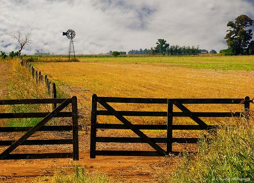

Mercados
Adónde va lo que el campo produce. Lo que Argentina hace bien ya tiene comprador en algún lado — esta sección cuenta dónde, quién paga y qué puerta falta tocar.

Tres destinos que ya compran lo que Argentina todavía no les ofrece
Vietnam paga la trazabilidad que acá se regala. Indonesia compra legumbre a precios que Rosario no vio. Filipinas importa lácteos de donde sea, menos de acá. El sudeste asiático paga por la calidad que en la pampa sobra. Falta el que toque la puerta.
Por la redacción · Lectura de 7 minLa bodega que dejó de rezarle a un solo importador
Dependía de un comprador en Miami. Una mala temporada de ese cliente casi se la lleva puesta. Así abrió otros cinco.
El arándano argentino busca dónde no llega el peruano
Perú se quedó con el volumen. Queda la ventana de contraestación tardía — angosta, pero paga mejor.
Carne kosher: el nicho que paga el doble y casi nadie atiende
Israel y la costa este compran cuota completa todos los años. Los frigoríficos habilitados se cuentan con una mano.
Miel a granel o miel con nombre: dónde está el rinde de verdad
El tambor sin marca paga el flete. El frasco con origen paga el año. La diferencia no está en la abeja.
India volvió a pagar caro por la legumbre. Dura lo que dura
Cada vez que India libera importaciones, alguien acá se hace la campaña. El que ya tenía el contacto, dos.
Contenedor propio o bodega compartida: la cuenta que pocos hacen
Consolidar carga abarata el flete y encarece el cliente. A partir de qué volumen conviene ir solo.
Una historia del campo por semana.
Sin relleno y sin newsletter de marketing. La gente, los mercados y el oficio del agro que produce para el mundo.
Cancelás cuando quieras. No mandamos lo que nosotros no leeríamos.